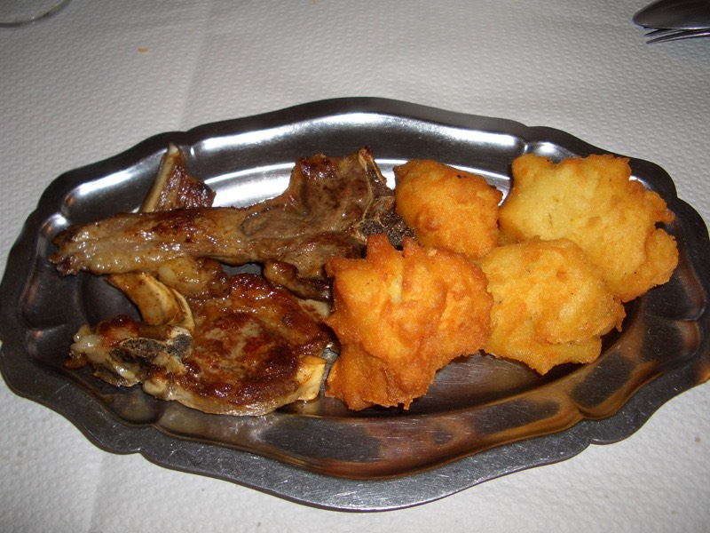

凌晨三點半，在極惡劣的宿醉中醒來，因為實在口渴的很難受。
昨晚真的喝太多了，混雜著喝了一堆有的沒的酒，身體馬上就提出了最嚴厲的抗議。
喝了幾杯溫開水後，頭痛欲裂，既然睡不著，不如就把未完的遊記趕出來吧。
慢慢的整理的文字跟照片，昨天晚上真是開心，一不小心就喝太多了... /_\
聊到我騎高速公路被警察攔下來，大家都笑的很開心，很好客的地方。
遊記弄好，居然早上六點了，不過天還是黑壓壓的，再補眠幾個小時吧，快要掛了。
勉強自己睡到將近九點，但還是一樣的難受，有過宿醉經驗的人就知道，這感覺跟死沒兩樣。
沖了個澡之後，還是沒好多少，真想便宜旅館繼續住一晚上，睡它一整天。
只怕多住一天，晚上又要再狠狠醉它一次，別癡人妄想了，這不是我入山的目的呀。
飯店的員工看到我每個都問我昨天睡的好不好？我只能苦笑點頭說睡得很好。
結完帳（葡萄酒是10歐元的晚餐附贈的，不另收錢）準備離開，老闆娘問我想不想吃點什麼？
雖然胃口逼近於零，但是免費的早餐，多少吃一點吧。
喝杯熱熱的巧克力，吃奶油+草莓醬塗的法國麵包，食之無味，只是塞進肚子裡填著。
吃飽了∼幫忙收拾餐桌，大家都會說別麻煩你，但如果可以的話，我真想自己洗杯子餐盤。
每天離開旅館的時候也是，因為我都沒有放小費在床邊給打掃房間的人，
所以離開之前就儘可能的將房間恢復成原本的樣子，減少別人的麻煩。
離開聖卡頓是走N117，TARBES跟PAU都是庇里牛斯山腳下的大城市，往山裡走就略過它們了。
法國人還真喜歡露營，好像吉普賽人一樣，以車為家，就這麼常住在野外了。
有茂密的森林，就會有伐木廠。
昨天大概是精神好，所以爬坡不會累，今天連走路都會喘，更何況是騎山路。
咬著牙，也爬了挺高的距離，登高遠眺，神清氣爽∼
奇怪的植物
沒那麼綠油油的桌布系列，流汗換來的。
山路都很蜿蜒，下坡雖然開心，但根本不能滑太快，煞車猛按，不然就會飛到山腳下。
向前面就是一個大左轉彎，時速超過35的話，自己都會害怕。
下午兩點半，有點撐不下去了，想喝點熱熱的湯，找個地方休息一下。
山裡面的小餐廳，超過午餐時間了還是有營業，吃一份10歐元的套餐，許久沒有這麼正式的吃午餐了。
先送來了蔬菜濃湯，如願以償喝到了熱湯，好開心。
湯裡的料很豐富，吃的出來有紅蘿蔔、洋蔥、馬鈴薯、四季豆、青豌豆、花椰菜，還有一些不明物。
接著是名副其實的冷盤，連盤子都是冰的。
中間的奶油可以配麵包。
哈蜜瓜不用多介紹。
右下角的香腸感覺有點生，咬勁十足，味道還可以，偏鹹了些。
左上角的白煮蛋，配的醬汁是淡紅色的，跟生菜沙拉的醬汁一樣。
右上角那個看起來有點辣的涼拌，吃起來卻完全不是這麼一回事。
對於陌生沒有吃過、聽過、看過的食物，在品嚐之前最好不要做任何假設的立場，不然可能會失望。
那應該是涼拌鰻魚類的東西，總之有魚肉在其中，吃了一小口，真是鹹到腦袋都要抽筋了，超鹹！
主菜不知道是牛排還是羊排，但是很好吃，配菜還以為是炸馬鈴薯，結果並不是。
有點像是炸麵粉團或是炸豆皮之類的東西，搞不太清楚，味道清清淡淡，很好吃。

甜點是甜的鮮奶油配上酸的要命的檸檬冰淇淋，吃這一頓飯，真是味覺革命，超鹹的、超酸的都來了。
在店門口小睡了片刻，吃了東西覺得身體好了一些，但仍需要休息。
迷迷糊糊的，還真的睡著了，後來覺得有東西在舔我的手，原來是一隻大大的狗，提醒我該上路了。
四點，繼續騎，命運的交叉路，向右走，是你重返城市的最後機會，向左走，只有更深更高的山。你說呢？
沿著D938，看到外星人的木乃伊，半夜看到一定會被自己嚇昏。
高山教堂，保佑我入山的選擇是正確的。
樹都被砍掉了，居然還冒出了一枝又一枝的細芽，真是堅韌的生命力呀。
雲層突然變得又多又厚，才下午四∼五點，感覺已經是晚上九點多，有些不妙的預感。
才剛到一個叫『Bagneres de-Bigorre』的地方，就下起了滂沱大雨外帶雷電交加。
果然相當相當的不妙，不騎了，趕緊找旅館住下吧，有地方能洗個熱水澡好好睡上一覺就太棒了。
冒著大雨問了兩間，居然還在客滿？真是不可思議呀，沒時間感嘆，再找找吧。
幸運的找到剩下最後一間房的旅館，房價也是還算OK的30歐元，房間很漂亮，木頭打造的。
我睡在屋頂那個小閣樓裡。
FCR1就停在老闆自家的倉庫裡，渾身溼搭搭的，趕快去洗澡吧∼別宿醉外加感冒，那就有的瞧了 >"<
晚餐還是要解決的，吃店裡的10元套餐，意外的豪華。
檸檬鮭魚

好吃的煎蛋捲+切丁的薯條
甜點是桑葚口味的冰淇淋
旅館的地圖，明天就要去騎D918公路了，本來是今天的目標，但是下雨就算了∼希望明天是好天氣。
從右上角的『Bagneres de Bigorre』順時針騎倒左邊的『Argles Gazost』距離不遠，但是等高線可是夠累人的。
今天早點睡吧 :)